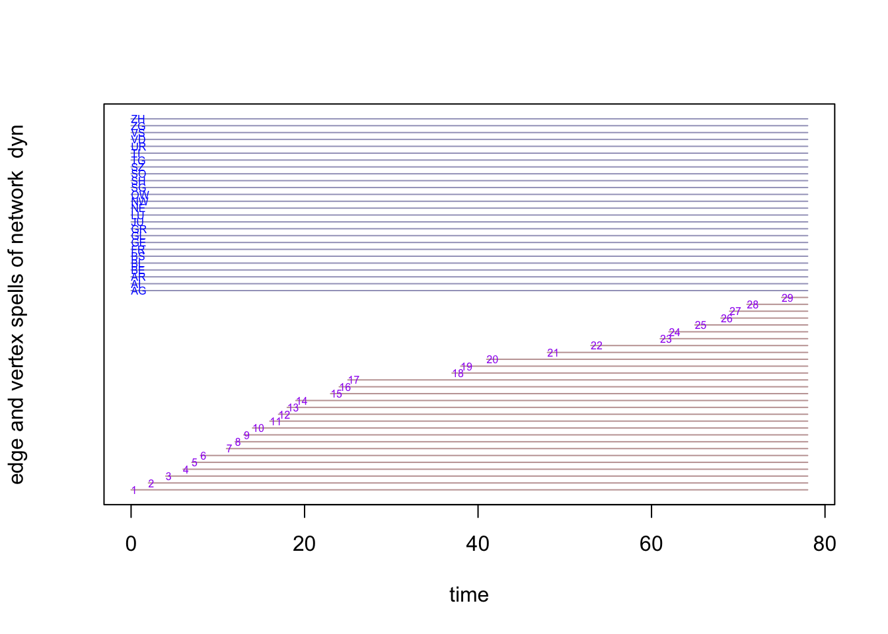
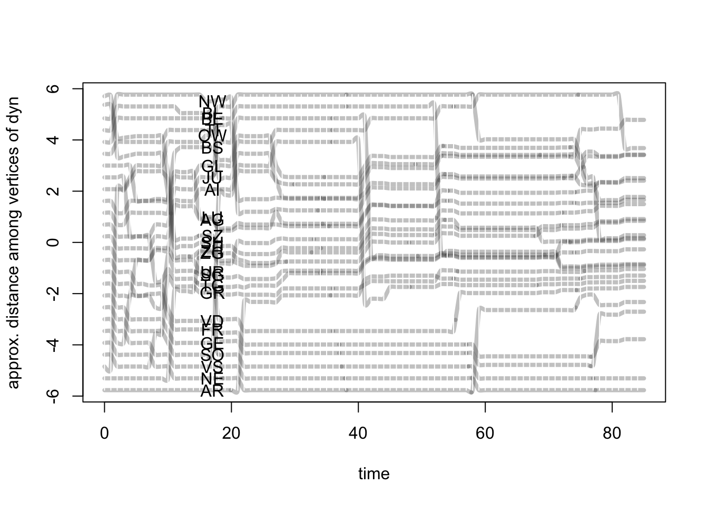

Trajectories of Institutional Design: Intergovernmental Cooperation in Federal Systems
Supplementary Materials
Upstream Downstream Drainage Area Example
About this Project
Supplementary Materials
Plot Animation
## slice parameters: ## start:0 ## end:85 ## interval:1 ## aggregate.dur:1 ## rule:latest
